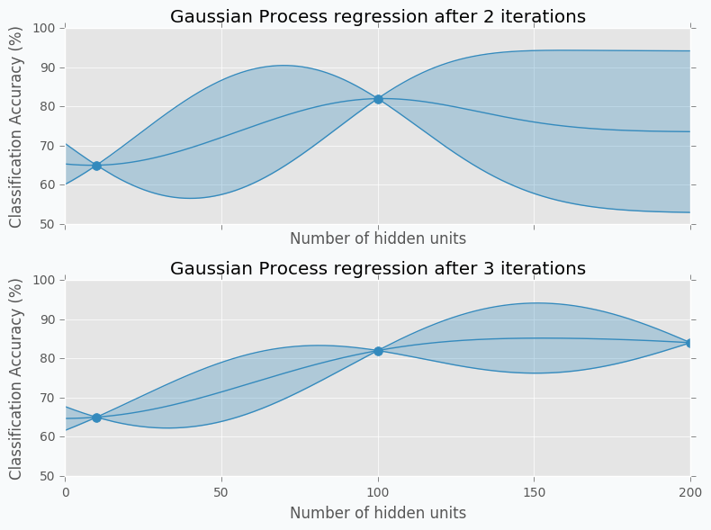
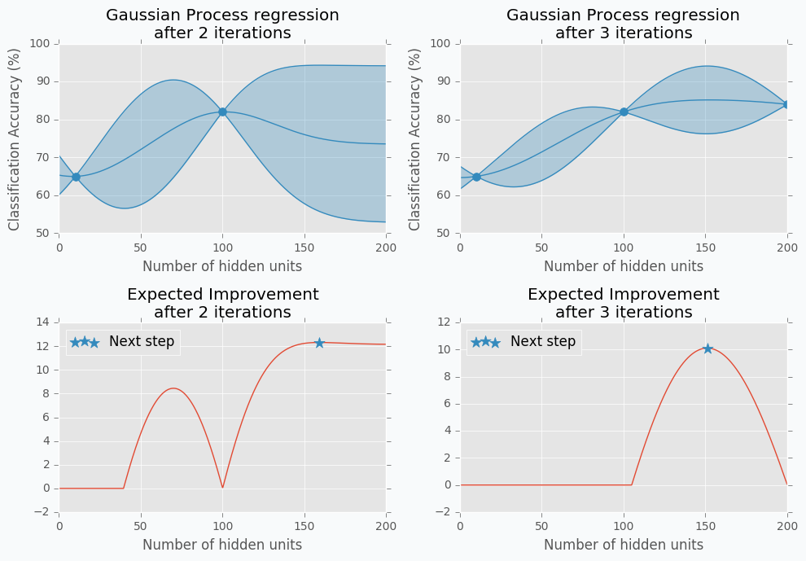
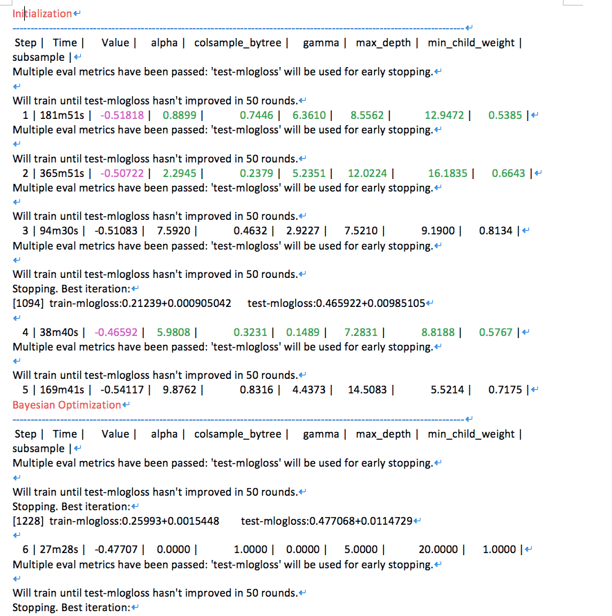
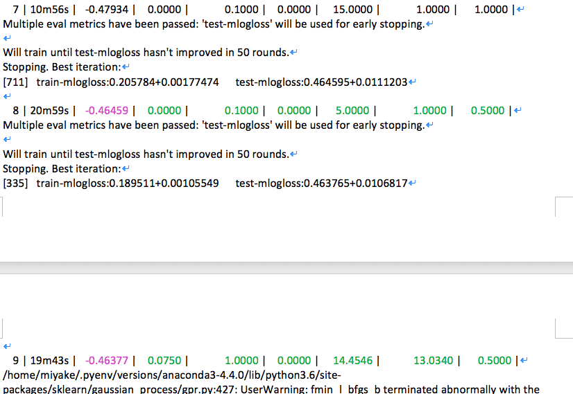
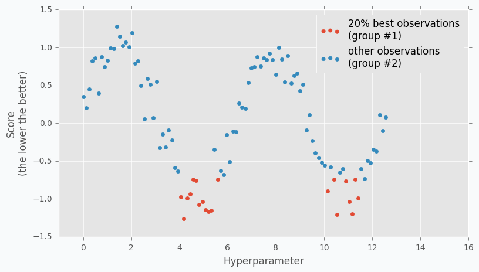
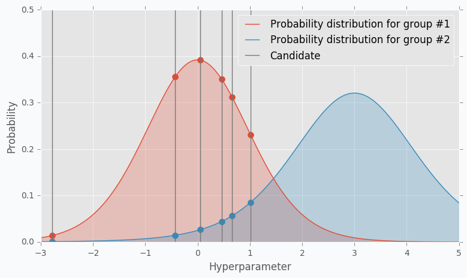
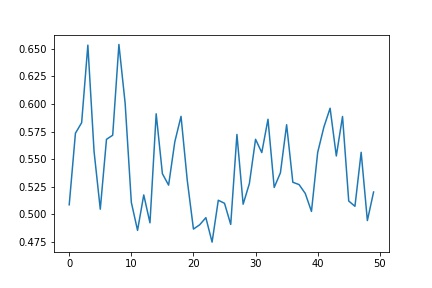
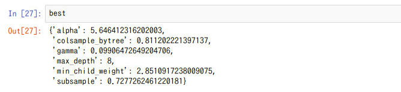

Parameter Tuning

機械学習を行う際に大事なのがパラメーターの調整です。 今まで適当にデフォルトの値でそのままやったりGridearchで探したりしていましたが、結構時間かかるので他の有効な方法を探して、手元で実際に動かして見ました。以下の資料がわかりやすかったです。(図もこちらのものを引用しました)
http://neupy.com/2016/12/17/hyperparameter_optimization_for_neural_networks.html
Bayesian Optimization
Bayesian Optimization はパラメーターを\(\boldsymbol{x}\)、評価値(精度とか)を\(y\)として
という関数を指定します(ブラックボックス関数)。中身は良くわかりませんが、この関数を最適化するパラメーターを見つけたいと思います。そこでBaysian Optimizationはこの関数がガウス過程に従うと仮定します。
下の図ではパラメーターの組み合わせをそれぞれ2,3個とって来て、その評価値を計算して結果をプロットしたグラフです。青い曲線はこの二点から導かれる関数の事後分布で、青い部分はこの分布の95%信頼区間です。

このグラフを見ると、観測点から離れた部分は信頼区間の幅が広い(=\(\sigma\)が大きい)ことがわかります。
獲得関数(Acquisition Function)
獲得関数は、次にどこの点を観測するか決める関数です。これにはいろいろな関数がありますが、よく使われるのが
という Expected Improvement [Mockus,1978]であったり、
のような Mutual Information [Contal+2014]がよく使われます。後者は特に直感的にわかりやすいと思うのですが、私たちも次にどの点を選ぶかというときに
- 観測した点から推測して精度が良さそうな点を選びたい(\(\mu\)が大きい)
- まだ観測していない場所から選びたい( \(\sigma\) が大きい)
ということを考えて選びそうなものです。よくできてますね。

実装
実装にはBayesian Optimizationを使いました。
使用するデータはkaggleのOtto Group Product Classification Challengeのデータで評価指標はmulti-class loglossです。定番のXGBoostのパラメータを最適化します。installはpipで入ります：pip install bayesian-optimization
import pandas as pd
import xgboost as xgb
from sklearn.preprocessing import LabelEncoder
from bayes_opt import BayesianOptimization
調整したいパラメーターを引数にとる評価関数の指定、クロスバリデーション。bayesian-optimizationには評価関数の最大化のライブラリしかないので、小さい値ほどいいloglossは返り値に-1をかけます。
def xgb_evaluate(min_child_weight, colsample_bytree,
max_depth, subsample, gamma, alpha):
params['min_child_weight'] = int(min_child_weight)
params['cosample_bytree'] = max(min(colsample_bytree, 1), 0)
params['max_depth'] = int(max_depth)
params['subsample'] = max(min(subsample, 1), 0)
params['gamma'] = max(gamma, 0)
params['alpha'] = max(alpha, 0)
cv_result = xgb.cv(params, xgtrain, num_boost_round=num_rounds, nfold=5,
seed=random_state,
callbacks=[xgb.callback.early_stop(50)])
return -cv_result['test-mlogloss-mean'].values[-1]
いよいよ最適化！
if __name__ == '__main__':
xgtrain = prepare_data()
num_rounds = 3000
random_state = 2016
num_iter = 25
init_points = 5
params = {'eta': 0.1,
'silent': 1,
'eval_metric': 'mlogloss',
'verbose_eval': True,
'seed': random_state,
'num_class':9}
xgbBO = BayesianOptimization(xgb_evaluate,
{'min_child_weight': (1, 20),
'colsample_bytree': (0.1, 1),
'max_depth': (5, 15),
'subsample': (0.5, 1),
'gamma': (0, 10),
'alpha': (0, 10),})
xgbBO.maximize(init_points=init_points, n_iter=num_iter)
結果
 
だいたい15回くらいの試行でloglossが0.46136まで下がりました。やってから気づいたんですが、max_depthとかって整数の値しかとらないですね、、、
ただし、ベイズ最適化には弱点もいくつかあって、
- カテゴリー変数の場合にうまくいかない。
- 偶然性に左右されたり、再現性が取れないことがある
- パラメータが増えてきたら時間かかる
みたいなことになるらしいです。
Tree-structured Parzen Estimator(TPE)
このような弱点を修正したのがTPEという最適化手法です。ベイズとコンセプトは似ていますが、手法は全く異なります。一般的な方法として、まずRandom Searchを用いていくつか点をとってきます。プロットすると下の図のようになりました。

次に精度が良かったもの(図では上位20%)とそうでなかったものに分けます。この2群の尤度関数を求めます。あまり尤度と言っても馴染みのない人が多いと思いますが、サンプリングされたデータは様々な確率分布のうち、どの分布から得られたものとするのが一番尤もらしいかを決めようとするものです。これにより2群の確率分布が出来上がります。
TPEでもExpected Improvement関数の下のように定義します。精度良かったものを\(l\),そうではなかったものを\(g\)として、
これをそれぞれの観測点に対して適用し、最もEIの値が大きかった場所が次の観測点になります。


実装
こっちも実装してみます。Pythonではhyperoptというライブラリがあってpipで入ります：pip install hyperopt
import hyperopt
from hyperopt import hp, tpe, Trials, fmin
最適化するパラメータはbayesian optimizationと同じやつにしてみました。
hyperopt_parameters = {'min_child_weight': hp.uniform('min_child_weight',1,20),
'colsample_bytree': hp.uniform('colsample_bytree',0.1, 1),
'max_depth': hp.choice('max_depth',np.arange(5, 15)),
'subsample': hp.uniform('subsample',0.5, 1),
'gamma': hp.uniform('gamma',0, 10),
'alpha': hp.uniform('alpha',0, 10),}
最適化する関数の指定
def objective(args):
classifier = xgb.XGBClassifier(**args)
stratifiedkfold = StratifiedKFold(n_splits=5)
result = cross_val_score(classifier, train.drop(['id','target'],axis = 1), train.target, cv=stratifiedkfold,scoring='neg_log_loss')
return -result.mean()
実行！
max_evals = 50
trials = Trials() # 実行結果を格納するインスタンス
best = fmin(objective,
hyperopt_parameters,
algo = tpe.suggest,
max_evals =max_evals,
trials = trials,
verbose = 1)
結果
 
logloss最小値は0.4749でした。あれ、bayesian optimizaationより悪い、、、bayesianではmax_depthを整数に限定しなかったからかも、、 でも自分で手動でやった時は0.6とかだったんで、パラメーターチューニングの時にはこれからこれ使っていこうと思います。あとこのxgboost動かすのに8コアCPU使ってそれぞれ半日くらい回しました。GPU使ってたらもうちょい早かったと思うのですが、きちんとbuildとmakeしてもうまくいきませんでした。また挑戦します。